Cocoon
EXPERIMENT / 02
Back to Mandelbrot
↗
MULTICORE COMPUTING
Ray Tracer
Visual proof
MAIN THREAD
Preparing studio…
CPU RAY TRACING
QUALITY
Preview · 24 samples
Studio · 96 samples
Fine · 256 samples
Preparing workers
Render again
↻
Stop
Loading Cocoon…